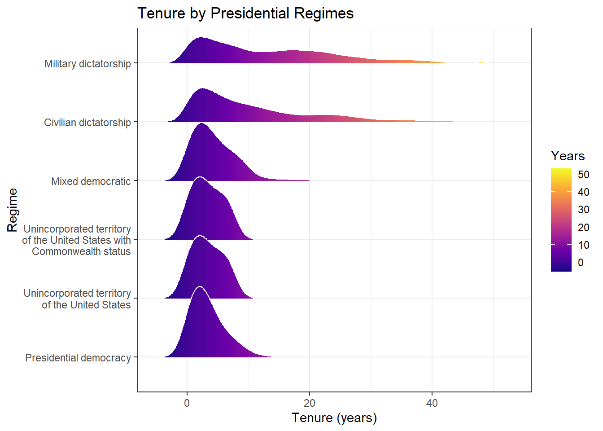
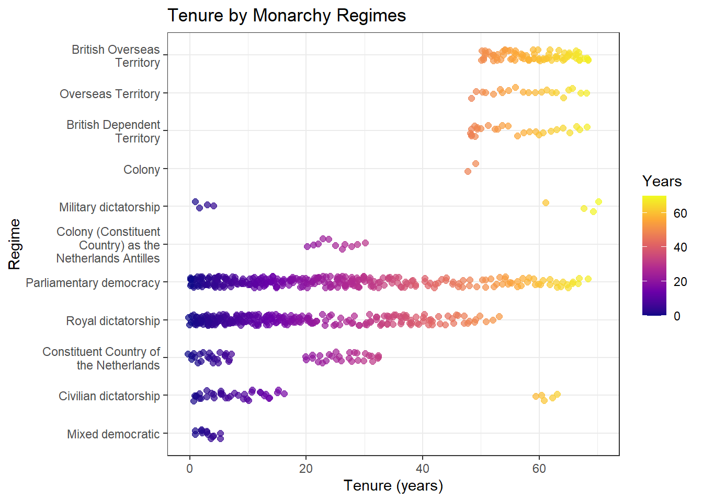

#Chunk used to load needed packages and data sets
#| message: false
#| warning: false
suppressPackageStartupMessages({
library(tidyverse)
library(countrycode)
library(glue)
library(jsonlite)
library(palmerpenguins)
library(gt)
library(tidyr)
library(purrr)
library(ggridges)
library(stringr)
library(dplyr)
library(ggplot2)
})
meta_data <- suppressMessages(read_csv("meta_data.csv", show_col_types = FALSE))Project 1 Final Deliverable
Data Context
Data Set #1 - “Democracy and Dictatorship”
This dataset was originally created by J. A. Cheibub, J. Gandhi, and J. R. Vreeland in “Democracy and Dictatorship Revisited” which was later edited for the TidyTuesday project by Jon Harmon. It contains observations of different countries around the world, meaning the observational unit is a country observed over time. The data span from 1950 to 2020, making it a long data set that tracks changes in political systems across several decades. The data was collected to study regime types, including democracies and non-democracies, as well as transitions such as coups and other forms of regime changes. These topics are important for understanding global political stability, governance, and institutional development. The dataset comes from the TidyTuesday project. This data was collected by Jon Harmon. The data was collected to be prepared and ready on 11/04/24 as part of the tidytuesday project. The dataset is portrayed in J. A. Cheibub, J. Gandhi, and J. R. Vreeland. “Democracy and Dictatorship Revisited”. In: Public Choice 143.1-2 (2009), pp. 67-101.
Data Set #2 - “Countries Life Expectancy”
This data set includes country-level health, economic, and demographic numbers that are associated with life expectancy. Some examples are immunization rates, mortality rates, and economic variables such as GDP and health expenditure. The data accounts for 178 countries from 2000 to 2015. This data set was obtained from Kaggle (by Amir Hossein Mirzaei).
Data Set #3 - “API Ninjas GDP API”
This data set is published and maintained by the API Ninjas team, who collects economic data from multiple sources. The data set consists of country-level observations, with each record representing a country’s GDP and related indicators for specific years. It includes both historical and more recent data, depending on the query made through the API. The data is collected and distributed digitally via API, though the exact original data sources are not fully specified. These data are of interest because they provide accessible and up to date economic indicators for use in analysis, applications, and research, making it easier to study and compare economic performance across countries.
Research Questions
Question #1
How does leader tenure differ across different political regimes?
Data Summaries and Visualizations
Summary Table #1
tenure_data <- meta_data |>
mutate(president_tenure = year - president_accesion_year,
monarch_tenure = year - monarch_accession_year
)
# function to get the mean tenure of either presidents or monarchs, and group them by their regime category
tenure_by_regime <- function(data, leader_type) {
if (leader_type == "president") {
data |>
filter(!is.na(president_name), !is.na(president_tenure)) |>
group_by(president_name, regime_category) |>
summarize(tenure = max(president_tenure, na.rm = TRUE), .groups = "drop") |>
group_by(regime_category) |>
summarize(mean_tenure = mean(tenure, na.rm = TRUE))
} else {
data |>
filter(!is.na(monarch_name), !is.na(monarch_tenure)) |>
group_by(monarch_name, regime_category) |>
summarize(tenure = max(monarch_tenure, na.rm = TRUE), .groups = "drop") |>
group_by(regime_category) |>
summarize(mean_tenure = mean(tenure, na.rm = TRUE))
}
}president_summary <- tenure_by_regime(tenure_data, "president")
monarch_summary <- tenure_by_regime(tenure_data, "monarch")
president_table <- president_summary |>
arrange(desc(mean_tenure)) |>
gt() |>
tab_header(title = "Mean Tenure by Presidential Regimes") |>
cols_label(regime_category = "Regime Category",
mean_tenure = "Mean Tenure (years)") |>
fmt_number(columns = c(mean_tenure),
decimals = 1) |>
tab_style(style = cell_text(weight = "bold"),
locations = cells_column_labels(columns = everything())) |>
tab_caption("Presidential regimes sorted in descending order by mean tenure length.") |>
data_color(
columns = mean_tenure,
colors = scales::col_numeric(c("#deebf7", "#08519c"), domain = NULL)
)
president_table| Mean Tenure by Presidential Regimes | |
| Regime Category | Mean Tenure (years) |
|---|---|
| Military dictatorship | 11.7 |
| Civilian dictatorship | 9.6 |
| Unincorporated territory of the United States | 6.0 |
| Unincorporated territory of the United States with Commonwealth status | 6.0 |
| Mixed democratic | 5.9 |
| Parliamentary democracy | 4.8 |
| Presidential democracy | 4.5 |
| Royal dictatorship | 0.0 |
Summary Table #2
get_tenure <- function(x) {
tenure_by_regime(tenure_data, x) |>
mutate(leader_type = x)
}
combined_wide <- map_dfr(c("president", "monarch"), get_tenure)|>
mutate(leader_type = recode(leader_type,
president = "President",
monarch = "Monarch")) |>
pivot_wider(names_from = leader_type,
values_from = mean_tenure) |>
drop_na(President, Monarch)comparison_table <- combined_wide |>
arrange(desc(President)) |>
gt() |>
tab_header(title = "Comparison of Mean Leader Tenure Across Regimes") |>
cols_label(regime_category = "Regime Category",
President = "President",
Monarch = "Monarch") |>
tab_spanner(label = "Mean Tenure (years)",
columns = c(President, Monarch)) |>
fmt_number(columns = c(President, Monarch),
decimals = 1) |>
tab_style(style = cell_text(weight = "bold"),
locations = cells_column_labels(columns = everything())) |>
tab_caption("Comparison of mean presidential and monarchical tenure across regime categories.") |>
data_color(columns = c(President, Monarch),
colors = scales::col_numeric(c("#deebf7", "#08519c"), domain = NULL))
comparison_table| Comparison of Mean Leader Tenure Across Regimes | ||
| Regime Category |
Mean Tenure (years)
|
|
|---|---|---|
| President | Monarch | |
| Military dictatorship | 11.7 | 37.0 |
| Civilian dictatorship | 9.6 | 17.0 |
| Mixed democratic | 5.9 | 4.7 |
| Parliamentary democracy | 4.8 | 26.7 |
| Royal dictatorship | 0.0 | 21.0 |
Visualization #1
tenure_data |>
filter(!is.na(president_tenure),
!is.na(regime_category),
is_presidential == TRUE) |>
mutate(regime_category = stringr::str_wrap(regime_category, width = 25)) |>
ggplot(aes(x = president_tenure,
y = reorder(regime_category, president_tenure, FUN = median),
fill = after_stat(x))) +
geom_density_ridges_gradient(scale = 1.2,
rel_min_height = 0.01,
color = "white",
alpha = 0.9) +
scale_fill_viridis_c(option = "C") +
labs(title = "Tenure by Presidential Regimes",
x = "Tenure (years)",
y = "Regime",
fill = "Years") +
theme_bw()
Visualization #2
tenure_data |>
filter(!is.na(monarch_tenure), !is.na(regime_category), is_monarchy == TRUE) |>
mutate(regime_category = stringr::str_wrap(regime_category, width = 25)) |>
ggplot(aes(x = reorder(regime_category, monarch_tenure),
y = monarch_tenure,
color = monarch_tenure)) +
geom_jitter(width = 0.15, alpha = 0.7, size = 2) +
coord_flip() +
scale_color_viridis_c(option = "C") +
labs(title = "Tenure by Monarchy Regimes",
x = "Regime",
y = "Tenure (years)",
color = "Years") +
theme_bw()
Data Model
stuff <- meta_data %>%
mutate(
leader_tenure = case_when(
!is.na(monarch_accession_year) ~ year - monarch_accession_year,
!is.na(president_accesion_year) ~ year - president_accesion_year,
)
) %>%
select(leader_tenure, regime_category, year) %>%
na.omit()
stuff$regime_category <- as.factor(stuff$regime_category)
stuff$year <- as.factor(stuff$year)
anova_result <- summary(aov(leader_tenure ~ regime_category + year, data = stuff))
model <- as.data.frame(anova_result[[1]])
model$Term <- rownames(model)
model <- model[, c("Term", "Df", "Sum Sq", "Mean Sq", "F value", "Pr(>F)")]
model %>%
gt() %>%
cols_label(
Term = "Term",
Df = "Df",
`Sum Sq` = "Sum of Squares",
`Mean Sq` = "Mean Square",
`F value` = "F value",
`Pr(>F)` = "p-value"
) %>%
fmt_number(
columns = c(`Sum Sq`, `Mean Sq`, `F value`),
decimals = 2
) %>%
fmt_scientific(
columns = `Pr(>F)`,
decimals = 2
) %>%
cols_align(
align = "center",
columns = c(Df, `Sum Sq`, `Mean Sq`, `F value`, `Pr(>F)`)
) %>%
tab_header(
title = "ANOVA Table of Leader Tenure by Regime Category and Year"
)| ANOVA Table of Leader Tenure by Regime Category and Year | |||||
| Term | Df | Sum of Squares | Mean Square | F value | p-value |
|---|---|---|---|---|---|
| regime_category | 14 | 422,568.20 | 30,183.44 | 297.80 | 0.00 |
| year | 20 | 344.48 | 17.22 | 0.17 | 1.00 × 100 |
| Residuals | 3858 | 391,022.02 | 101.35 | NA | NA |
The ANOVA results show that leader tenure differs significantly across political regimes, as the effect of regime category is highly statistically significant (F = 297.80, p < 0.001). This indicates that the type of political regime plays a major role in determining how long leaders remain in power. However, the effect of year is not statistically significant (F = 0.17, p ≈ 1.00), suggesting there is no meaningful change in leader tenure over time once regime type is considered. Overall, these findings suggest that variation in leader tenure is mainly due to differences between political regimes rather than trends over time.